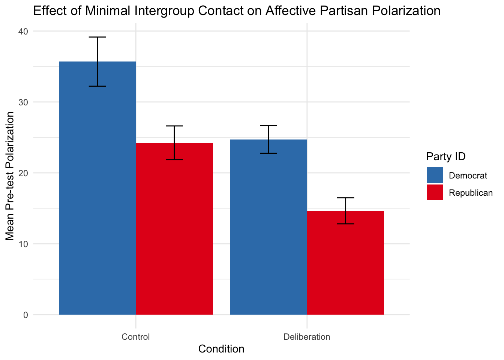
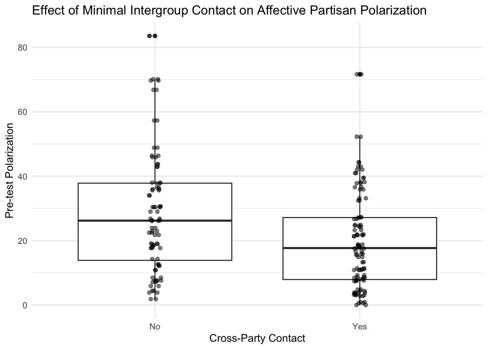
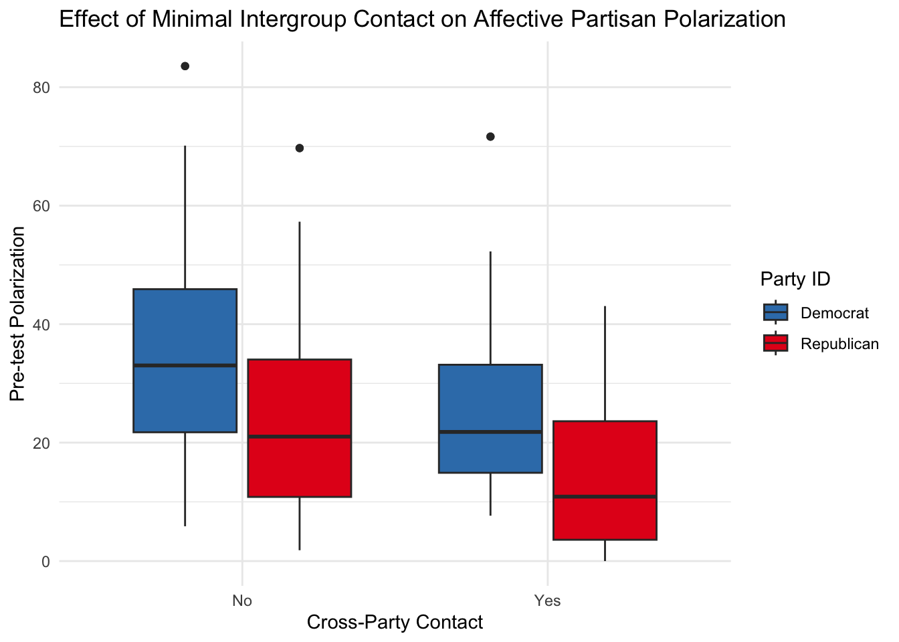
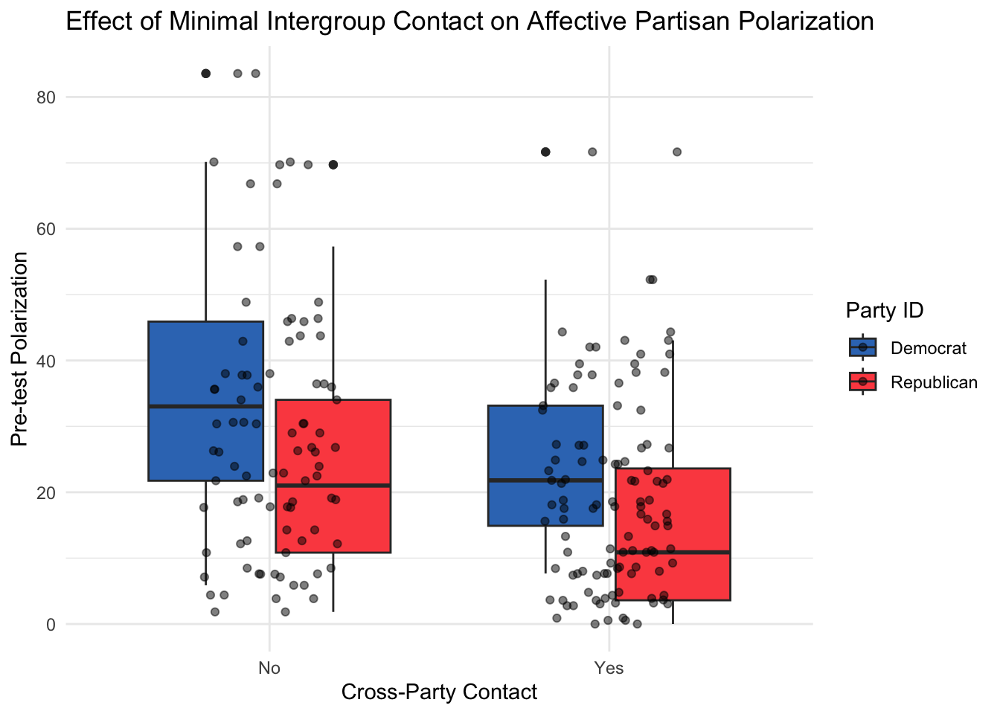
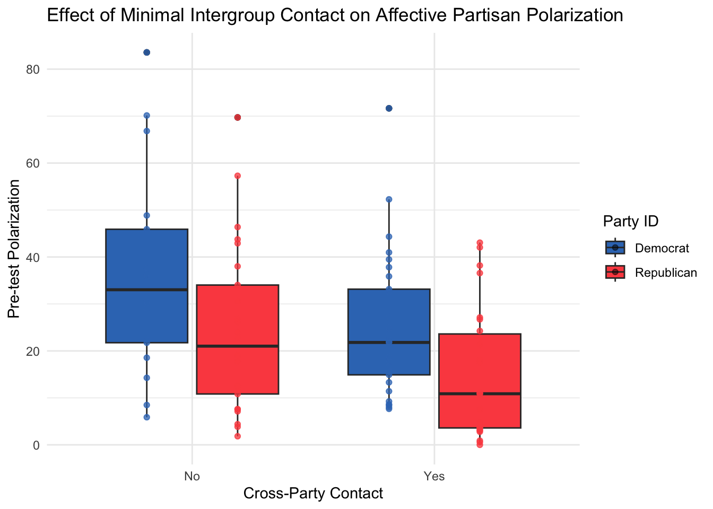
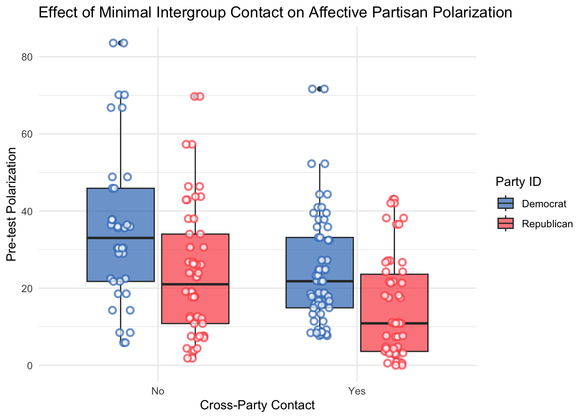
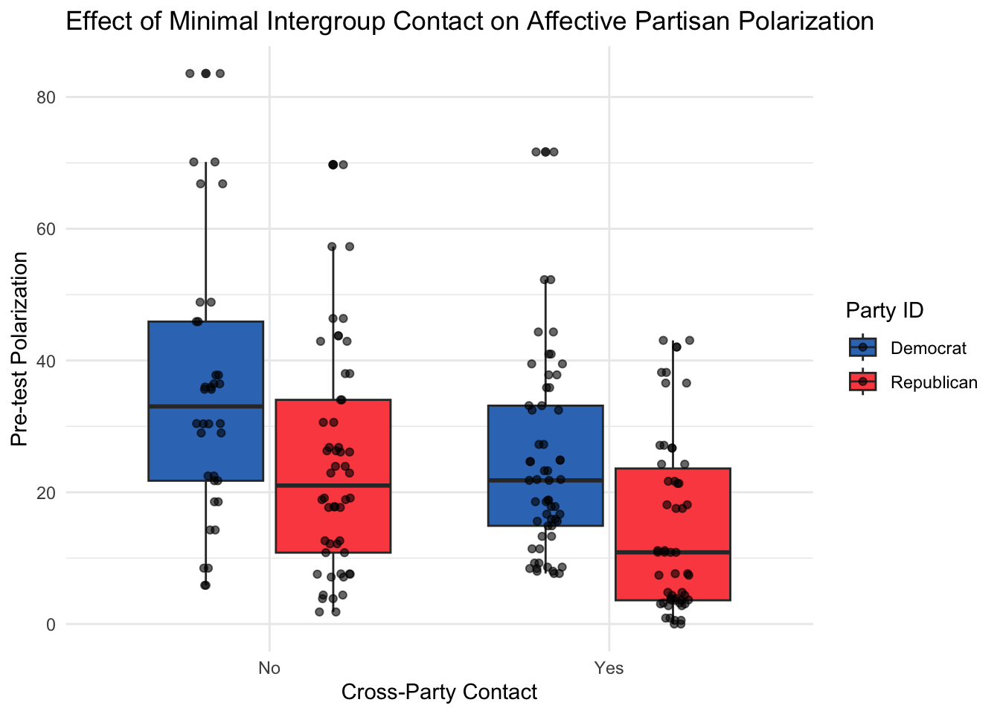
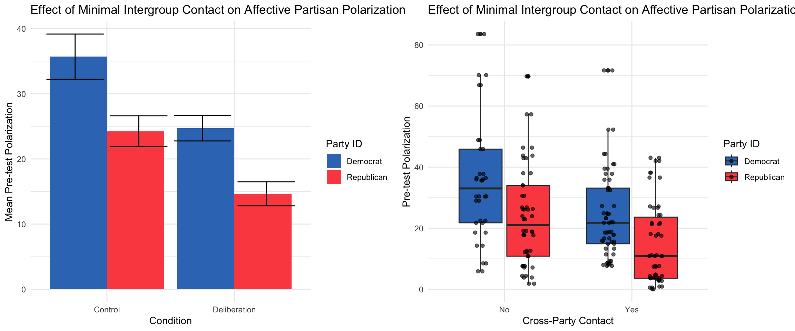
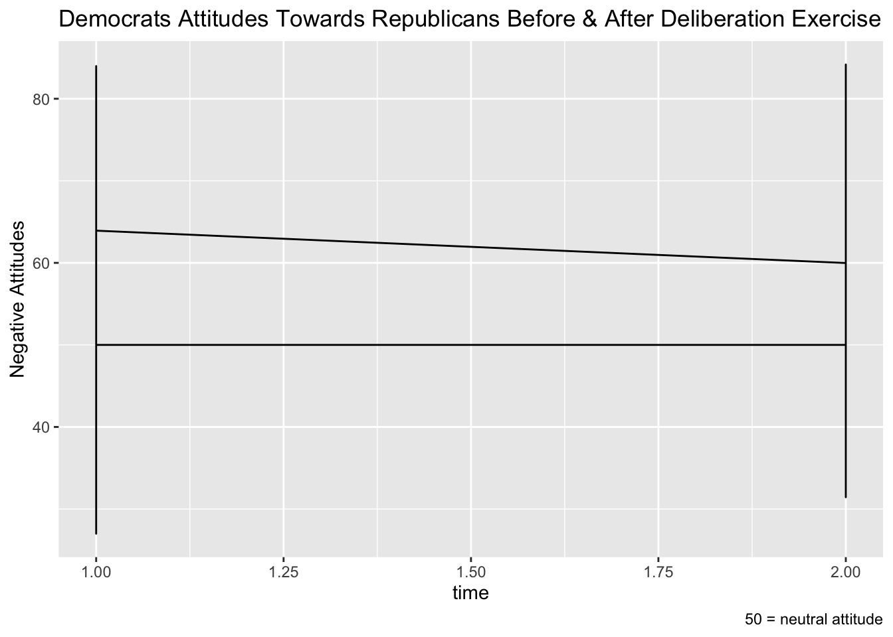
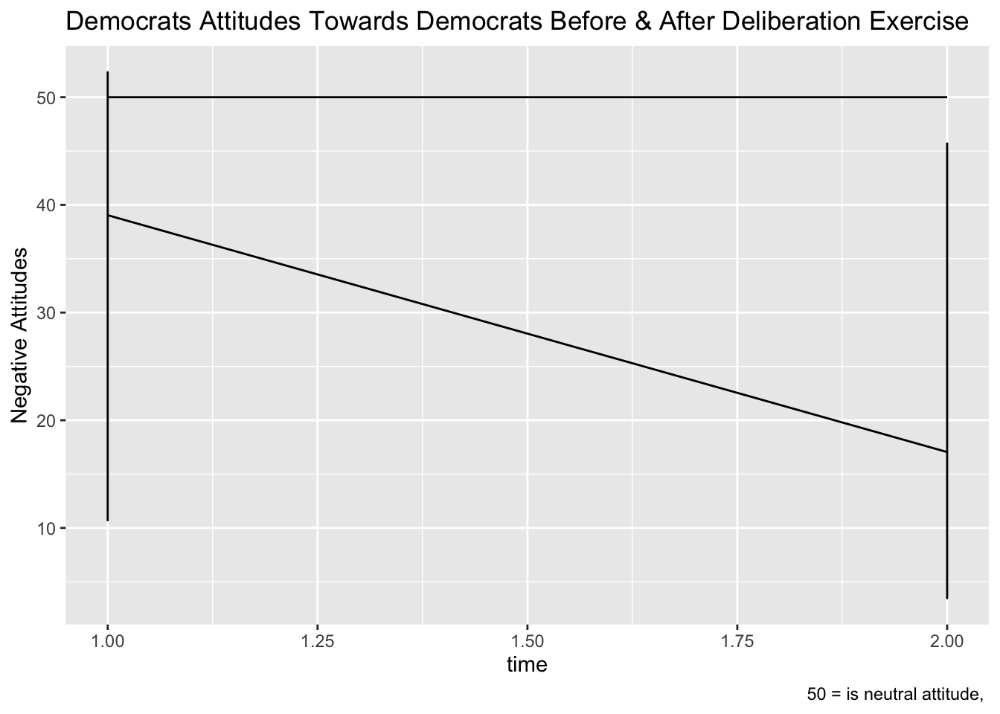

Context: For the bar graph displayed in in portfolio projects 1 and 2, I had essentially replicated a graph that I’d previously made in SPSS, and I relied on Claude.ai to help improve the graph in places where my knowledge of ggplot was limited. I’d not given much though to whether the bar graph was the best way to visualize the aspects of the data I was trying visualize. Now that I know more about ggplot and more about the principles of effective data visualization, I’m going to try to apply what I’ve learned by considering alternative ways to visualize the data.
Goal: Practice considering principles of effective data visualization.
Product: A comparison between a bar graph and a set of box plots.
Data: Data contains information about affective political polarization grouped by political party identification and experimental group (described more below).
library(tidyverse)
library(haven)
long_data <- read_sav("data/LongData copy.sav")
long_data## # A tibble: 400 × 7
## participant delib partyid target time bias polarization
## <dbl> <dbl+lbl> <dbl+lbl> <dbl+l> <dbl+l> <dbl> <dbl>
## 1 1 1 [deliberation] 1 [Democrats] 1 [Dem… 1 [pre… 12.0 52.3
## 2 1 1 [deliberation] 1 [Democrats] 2 [Rep… 1 [pre… 64.3 52.3
## 3 1 1 [deliberation] 1 [Democrats] 1 [Dem… 2 [ po… 17.0 42.9
## 4 1 1 [deliberation] 1 [Democrats] 2 [Rep… 2 [ po… 60.0 42.9
## 5 2 1 [deliberation] 1 [Democrats] 1 [Dem… 1 [pre… 30.0 33.1
## 6 2 1 [deliberation] 1 [Democrats] 2 [Rep… 1 [pre… 63.1 33.1
## 7 2 1 [deliberation] 1 [Democrats] 1 [Dem… 2 [ po… 25.1 30.0
## 8 2 1 [deliberation] 1 [Democrats] 2 [Rep… 2 [ po… 55.0 30.0
## 9 3 1 [deliberation] 1 [Democrats] 1 [Dem… 1 [pre… 40.8 7.67
## 10 3 1 [deliberation] 1 [Democrats] 2 [Rep… 1 [pre… 48.5 7.67
## # ℹ 390 more rowsFirst, here is the plot that was in projects 1 and 2. (Note: to create this plot I first have to create a dataframe with mean polarization scores, which I do below.)
pretest_pol_summary <- long_data %>%
filter(time == 1) %>%
group_by(delib, partyid) %>%
summarise(
mean_pol = mean(polarization, na.rm = TRUE),
se_pol = sd(polarization, na.rm = TRUE) / sqrt(n()),
n = n()
)## `summarise()` has grouped output by 'delib'. You can override using the
## `.groups` argument.ggplot(pretest_pol_summary, aes(x = factor(delib), y = mean_pol, fill = factor(partyid))) +
geom_bar(stat = "identity", position = "dodge") +
geom_errorbar(aes(ymin = mean_pol - se_pol,
ymax = mean_pol + se_pol),
position = position_dodge(0.9), width = 0.2) +
scale_x_discrete(labels = c("Control", "Deliberation")) +
#I used colorbrewer2.0 to improve the colors
scale_fill_manual(values = c("#377eb8", "#e41a1c"), labels = c("Democrat", "Republican")) +
labs(x = "Condition", y = "Mean Pre-test Polarization", fill = "Party ID") +
ggtitle("Effect of Minimal Intergroup Contact on Affective Partisan Polarization") +
theme_minimal()
One improvement to this plot compared to how it was in the previous projects is that I selected new colors, shades of red and blue which are less harsh than the previous red and blue colors.
I learned that bar graphs are not always the best way to compare group means and that boxplots are sometimes preferable. I’ll try that now.
long_data %>%
filter(time == 1) %>%
ggplot(aes(x = factor(delib), y = polarization)) +
geom_boxplot() +
scale_x_discrete(labels = c("No", "Yes")) +
labs(x = "Cross-Party Contact",
y = "Pre-test Polarization",
title = "Effect of Minimal Intergroup Contact on Affective Partisan Polarization"
) +
geom_jitter(width = 0.03, alpha = 0.5) +
theme_minimal()
A note on polarization variable:
Polarization in this study represents affective political polarization, and it was obtained by measuring attitudes on a continuum from negative to postive towards one’s own political party and towards the other political party (i.e., Democrats and Republicans) and taking the absolute value of the difference between the two. For example, someone who felt neutral towards both parties (a bias score of 50 towards Democrats and 50 towards Republicans) would have a polarization score of 0. Someone who had very positive attitudes towards Democrats (say, a bias score of 12 [where scores below 50 represent positive attitudes]) and very negative attitudes towards Republicans (say, a bias score of 82 [where scores above 50 represent negative attitudes]) would have a polarization score of 70.
Notes on Plot Design:
Since, at pretest, no deliberation exercise had yet taken place, the only difference between the deliberation and control group is that the people in the deliberation group were completing the pre-test survey while seated at a table with both members of their own political party and the other political party while the people in the control group were completing the pre-test survey alone. Hence, instead of labeling the x-axis as deliberation group and control group, I opted to apply a label that more accurately captures the difference between these groups at pre-test—whether or not there was any cross-party contact.
These boxplots aren’t exactly comparable to the barplot above because they do not depict the data grouped by political party. This, however, I think, may be a benefit because we need only interpret one comparison (the pretest polarization of a group which had cross-party contact and one which did not have cross-party contact) instead of worrying about differences between parties.
Interpretation:
These two box plots represent the pre-test polarization scores for the deliberation group and the control group.
They show that there was more pre-test polarization among the group which had no cross-party contact and less pre-test polarization among the group which did have cross-party contact.
The box plots also enable us to note other things about the data. For example, it seems that the distribution of pre-test polarization scores of those who had cross-party contact is tighter, less dispersed, than the distribution of pre-test polarization scores of those who did not have cross-party contact. Why might that be? Viewing the data in this way opens the door to questions which would not have otherwise arisen.
Here is the first version of comparing cross-party contact and no cross-party contact groups on their levels of pre-test polarization also showing differences between parties.
long_data %>%
filter(time == 1) %>%
ggplot(aes(x = factor(delib), y = polarization, fill = factor(partyid))) +
geom_boxplot() +
scale_x_discrete(labels = c("No", "Yes")) +
scale_fill_manual(values = c("#377eb8", "#e41a1c"), labels = c("Democrat", "Republican")) +
labs(x = "Cross-Party Contact", y = "Pre-test Polarization", fill = "Party ID") +
ggtitle("Effect of Minimal Intergroup Contact on Affective Partisan Polarization") +
theme_minimal()
Interpretation: Compared to the previous box plots, these box plots basically show the same thing plus the fact that there seems to be a main effect of party such that Democrats are more polarized than Republicans.
It would be nice to see the data points as we did with the previous box plots.
Here is my first attempt.
long_data %>%
filter(time == 1) %>%
ggplot(aes(x = factor(delib), y = polarization, fill = factor(partyid))) +
geom_boxplot() +
# Change the width parameter and add position_dodge
geom_jitter(width = 0.2, alpha = 0.5) +
scale_x_discrete(labels = c("No", "Yes")) +
scale_fill_manual(values = c("#3778bf", "#fc4f4f"), labels = c("Democrat", "Republican")) +
labs(x = "Cross-Party Contact", y = "Pre-test Polarization", fill = "Party ID") +
ggtitle("Effect of Minimal Intergroup Contact on Affective Partisan Polarization") +
theme_minimal()
You can see that this is not quite what I had in mind. I want the data points to also be grouped by party. I wasn’t sure how to proceed, so I asked Claude.ai for help.
Claude gave the code below which did not work because, within geom_jitter(), you can’t have both width and position_dodge with a width.
long_data %>%
filter(time == 1) %>%
ggplot(aes(x = factor(delib), y = polarization, fill = factor(partyid))) +
geom_boxplot() +
# Change the width parameter and add position_dodge
geom_jitter(width = 0.2, alpha = 0.5,
aes(color = factor(partyid)), # Add color aesthetic
position = position_dodge(width = 0.75)) + # Add dodge positioning
scale_x_discrete(labels = c("No", "Yes")) +
scale_fill_manual(values = c("#3778bf", "#fc4f4f"), labels = c("Democrat", "Republican")) +
scale_color_manual(values = c("#3778bf", "#fc4f4f"), guide = "none") + # Match colors and hide legend
labs(x = "Cross-Party Contact", y = "Pre-test Polarization", fill = "Party ID") +
ggtitle("Effect of Minimal Intergroup Contact on Affective Partisan Polarization") +
theme_minimal()My attempt to fix it was to just delete the first width in geom_jitter.
long_data %>%
filter(time == 1) %>%
ggplot(aes(x = factor(delib), y = polarization, fill = factor(partyid))) +
geom_boxplot() +
# Change the width parameter and add position_dodge
geom_jitter(alpha = 0.5,
aes(color = factor(partyid)), # Add color aesthetic
position = position_dodge(width = 0.75)) + # Add dodge positioning
scale_x_discrete(labels = c("No", "Yes")) +
scale_fill_manual(values = c("#3778bf", "#fc4f4f"), labels = c("Democrat", "Republican")) +
scale_color_manual(values = c("#3778bf", "#fc4f4f"), guide = "none") + # Match colors and hide legend
labs(x = "Cross-Party Contact", y = "Pre-test Polarization", fill = "Party ID") +
ggtitle("Effect of Minimal Intergroup Contact on Affective Partisan Polarization") +
theme_minimal()
So, now the points are aligned with their boxplots, but they aren’t jittered—which defeats the point of using geom_jitter().
I again asked Claude for help, and he recommended the perfect solution:
long_data %>%
filter(time == 1) %>%
ggplot(aes(x = factor(delib), y = polarization, fill = factor(partyid))) +
geom_boxplot() +
# Use position_jitterdodge instead of combining width and position_dodge
geom_point(alpha = 0.5,
aes(color = factor(partyid)), # Add color aesthetic
position = position_jitterdodge(jitter.width = 0.2, dodge.width = 0.75)) + # Combined solution
scale_x_discrete(labels = c("No", "Yes")) +
scale_fill_manual(values = c("#3778bf", "#fc4f4f"), labels = c("Democrat", "Republican")) +
scale_color_manual(values = c("#3778bf", "#fc4f4f"), guide = "none") + # Match colors and hide legend
labs(x = "Cross-Party Contact", y = "Pre-test Polarization", fill = "Party ID") +
ggtitle("Effect of Minimal Intergroup Contact on Affective Partisan Polarization") +
theme_minimal()Now, the points are grouped by party, aligned with the correct box plots, and jittered—but they are blending in with the boxplot.
Here is Claude’s solution:
long_data %>%
filter(time == 1) %>%
ggplot(aes(x = factor(delib), y = polarization, fill = factor(partyid))) +
geom_boxplot(alpha = 0.7) + # Slightly reduce box plot opacity
geom_point(alpha = 0.7,
aes(color = factor(partyid)),
position = position_jitterdodge(jitter.width = 0.2, dodge.width = 0.75),
size = 2, # Increase point size
shape = 21, # Filled circle with border
stroke = 1.2, # Thicker border
fill = "white") + # White fill for contrast
scale_x_discrete(labels = c("No", "Yes")) +
scale_fill_manual(values = c("#3778bf", "#fc4f4f"), labels = c("Democrat", "Republican")) +
scale_color_manual(values = c("#3778bf", "#fc4f4f"), guide = "none") + # Match colors for point borders
labs(x = "Cross-Party Contact", y = "Pre-test Polarization", fill = "Party ID") +
ggtitle("Effect of Minimal Intergroup Contact on Affective Partisan Polarization") +
theme_minimal()
I wasn’t happy with this solution, so I asked Claude to just make the points black.
long_data %>%
filter(time == 1) %>%
ggplot(aes(x = factor(delib), y = polarization, fill = factor(partyid))) +
geom_boxplot() +
geom_point(color = "black", # Make all points black
alpha = 0.6, # Slight transparency
position = position_jitterdodge(jitter.width = 0.2, dodge.width = 0.75)) +
scale_x_discrete(labels = c("No", "Yes")) +
scale_fill_manual(values = c("#3778bf", "#fc4f4f"), labels = c("Democrat", "Republican")) +
labs(x = "Cross-Party Contact", y = "Pre-test Polarization", fill = "Party ID") +
ggtitle("Effect of Minimal Intergroup Contact on Affective Partisan Polarization") +
theme_minimal()
Alright. Now, I’ve satisfactorily created the plot I had in mind.
It seems to me to show the same general story as the first set of box plots grouped by party did, but now we have essentially the full data in front of our eyes. Neat.
Let’s compare these box plots to the original bar plot and consdier pros and cons.
Claude helped me figure out how to get the plots to display side-by-side for easier comparison.
# Create bar plot
bar_plot <- ggplot(pretest_pol_summary, aes(x = factor(delib), y = mean_pol, fill = factor(partyid))) +
geom_bar(stat = "identity", position = "dodge") +
geom_errorbar(aes(ymin = mean_pol - se_pol,
ymax = mean_pol + se_pol),
position = position_dodge(width = 1)) +
scale_x_discrete(labels = c("Control", "Deliberation")) +
scale_fill_manual(values = c("#3778bf", "#fc4f4f"), labels = c("Democrat", "Republican")) +
labs(x = "Condition", y = "Mean Pre-test Polarization", fill = "Party ID") +
ggtitle("Effect of Minimal Intergroup Contact on Affective Partisan Polarization") +
theme_minimal()
# Create box plot
box_plot <- long_data %>%
filter(time == 1) %>%
ggplot(aes(x = factor(delib), y = polarization, fill = factor(partyid))) +
geom_boxplot() +
geom_point(color = "black",
alpha = 0.6,
position = position_jitterdodge(jitter.width = 0.2, dodge.width = 0.75)) +
scale_x_discrete(labels = c("No", "Yes")) +
scale_fill_manual(values = c("#3778bf", "#fc4f4f"), labels = c("Democrat", "Republican")) +
labs(x = "Cross-Party Contact", y = "Pre-test Polarization", fill = "Party ID") +
ggtitle("Effect of Minimal Intergroup Contact on Affective Partisan Polarization") +
theme_minimal()
# Display side-by-side using gridExtra
library(gridExtra)##
## Attaching package: 'gridExtra'## The following object is masked from 'package:dplyr':
##
## combinegrid.arrange(bar_plot, box_plot, ncol = 2)
(Not sure why the error bars are ugly now, but oh well.)
The box plots do give lots of information about the data. You are able to get a better idea of the distribution, and, with the points added in, that’s even more the case.
All things considered, however, I think I probably still prefer the bar plot.
The question we are setting out to address with plots is, Is there a difference between pre-test polarization between the deliberation and control groups, and are there differences between the two parties?
Both plots answer that question. The bar plot just answers it more simply, and the box plots answer it with lots more high resolution information. In this case, however, that high resolution information isn’t all that pertinent to the question at hand.
Therefore, one takeaway from this exercise is probably that box plots do indeed contain more information than bar plots, but the amount of information you display in a plot should be appropriate for the question that you are addressing.
The stuff below can be ignored. It’s where I began to try to make other plots to answer questions about this dataset, but I didn’t get very far (and the plots are pretty bad). It will perhaps be a project for another time.
long_data %>%
filter(partyid == 1, delib == 1, target == 2) %>%
ggplot(aes(x = time, y = bias)) +
geom_line() +
geom_line(y = 50) +
labs(y = "Negative Attitudes", title = "Democrats Attitudes Towards Republicans Before & After Deliberation Exercise", caption = "50 = neutral attitude")
long_data %>%
filter(partyid == 1, delib == 1, target == 1) %>%
ggplot(aes(x = time, y = bias)) +
geom_line() +
geom_line(y = 50) +
labs(y = "Negative Attitudes", title = "Democrats Attitudes Towards Democrats Before & After Deliberation Exercise", caption = "50 = is neutral attitude, ")